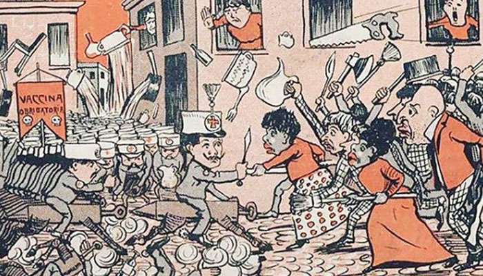
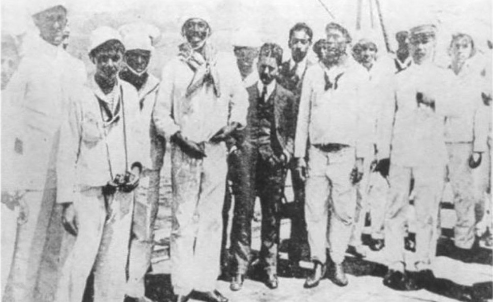
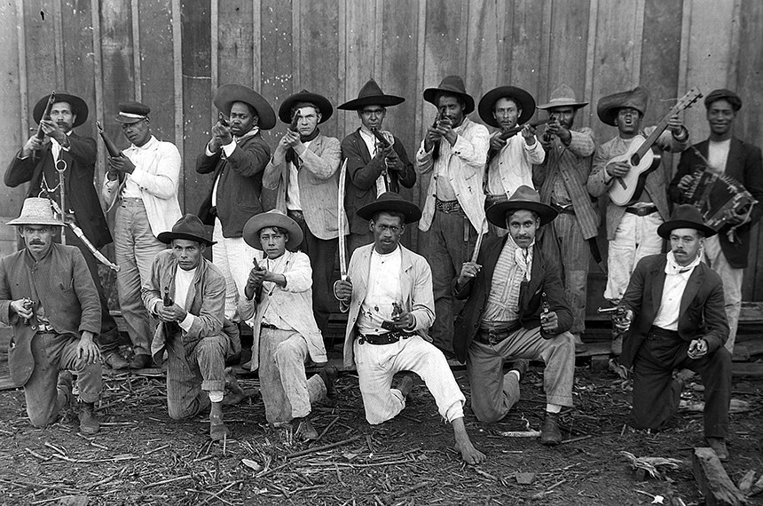
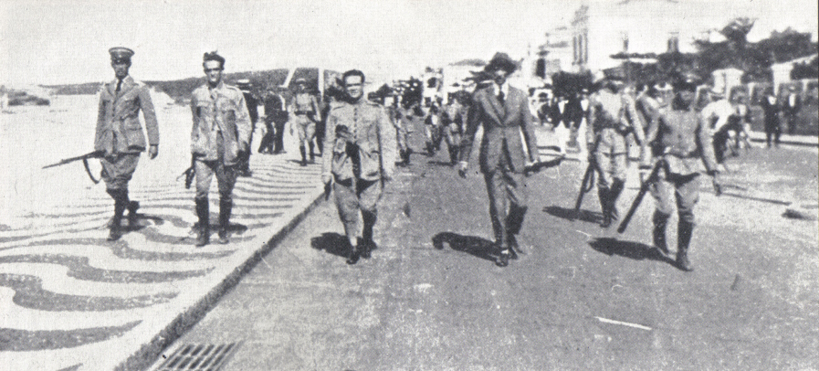

Revolta Federalista (1893 - 1895)

Revolta de Canudos (1896 - 1897)

Revolta da Vacina (1904)

Revolta da chibata (1910)

Revolta do Contestado (1912 - 1916)



Clique em um dos cards abaixo para explorar a fundo cada movimento histórico.



